Зимовий розпродаж: знижка 50% + безкоштовна доставка


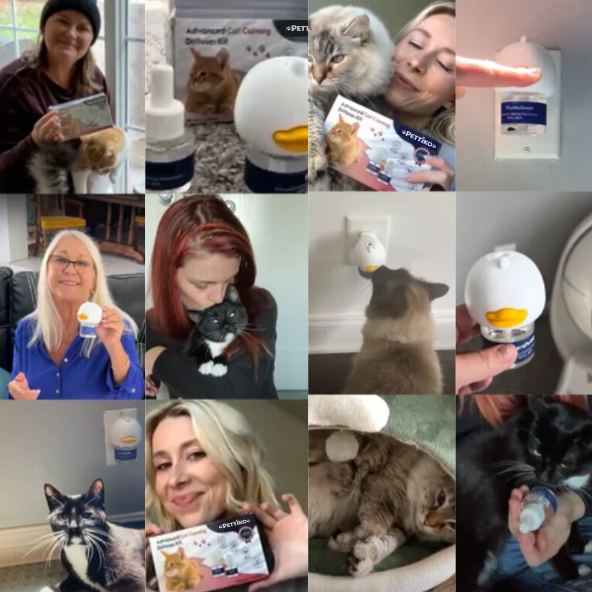
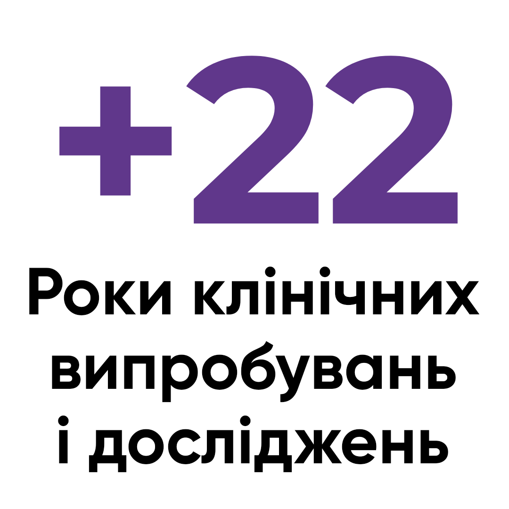
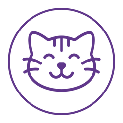
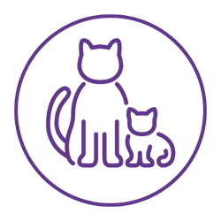
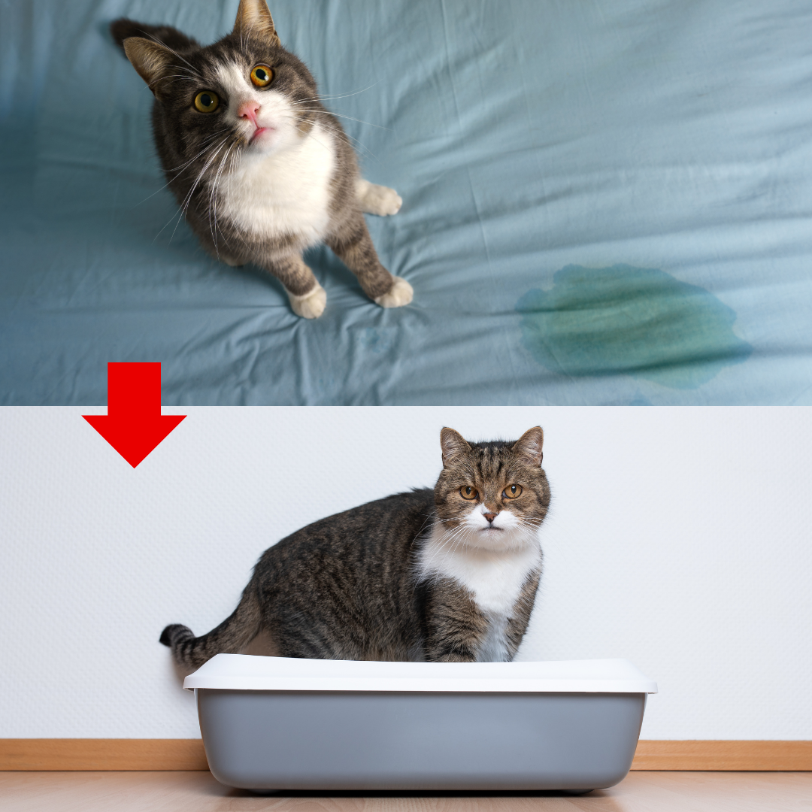
Заспокойте тривогу вашої кішки та сприяйте її спокою за допомогою нашої антистресової формули.
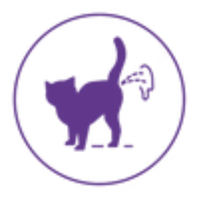
Усуньте проблеми з випадковим сечовипусканням для свіжого дому без запаху, що полегшить життя вам та вашому задоволеному коту.

Позбудьтеся звички дряпати меблі, створивши гармонійний зв'язок зі своїм котячим компаньйоном.
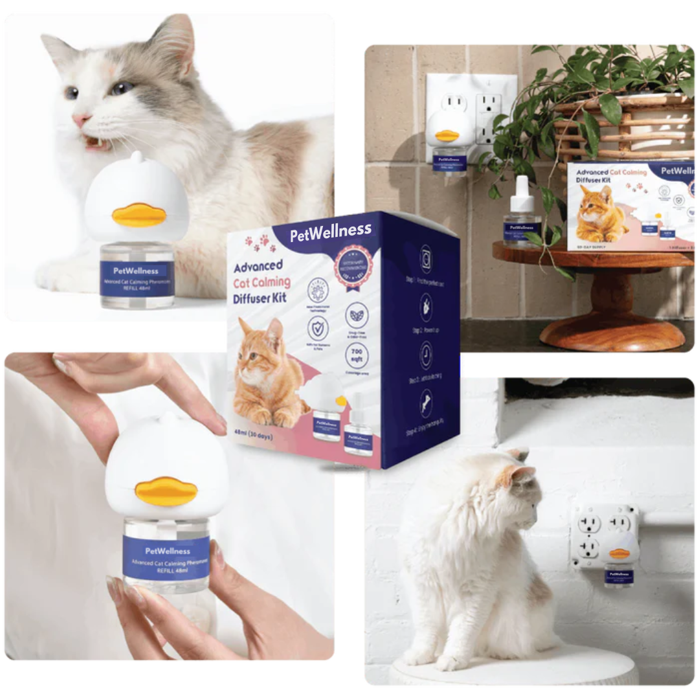
Створити гавань спокою, де насильницькі напади та образлива поведінка поступаються місцем безтурботній гармонії.
Це вселяє довіру та відчуття безпеки у сором'язливих або боязких котів, пропонуючи затишний притулок для їхнього благополуччя.
Забезпечте плавнішу адаптацію вашої кішки до змін під час переїздів, подорожей або знайомства з новими тваринами.
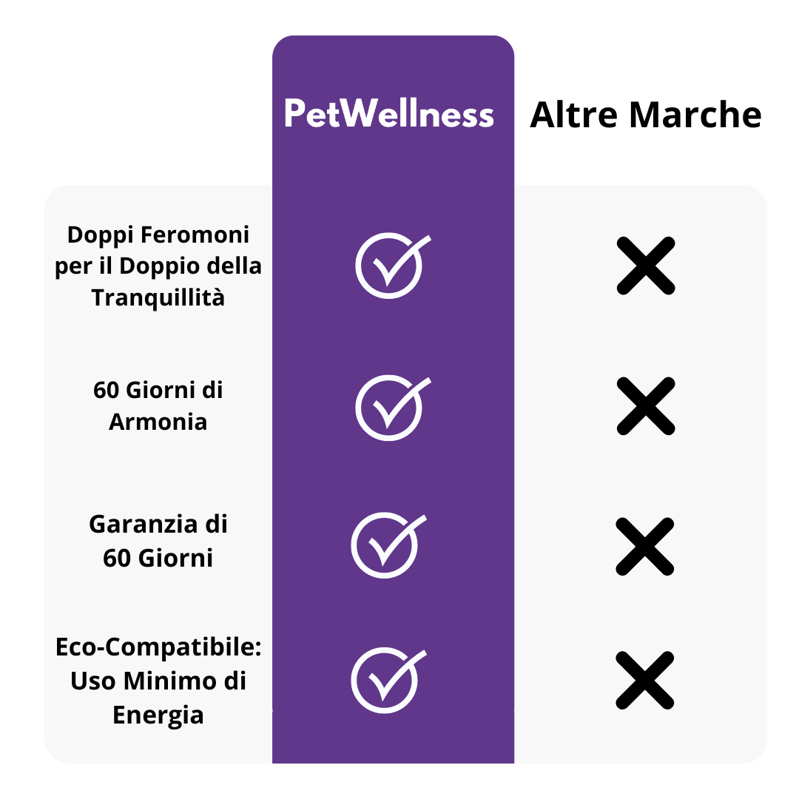
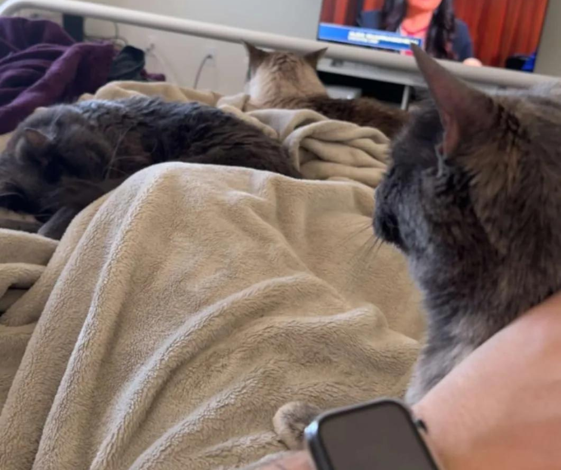
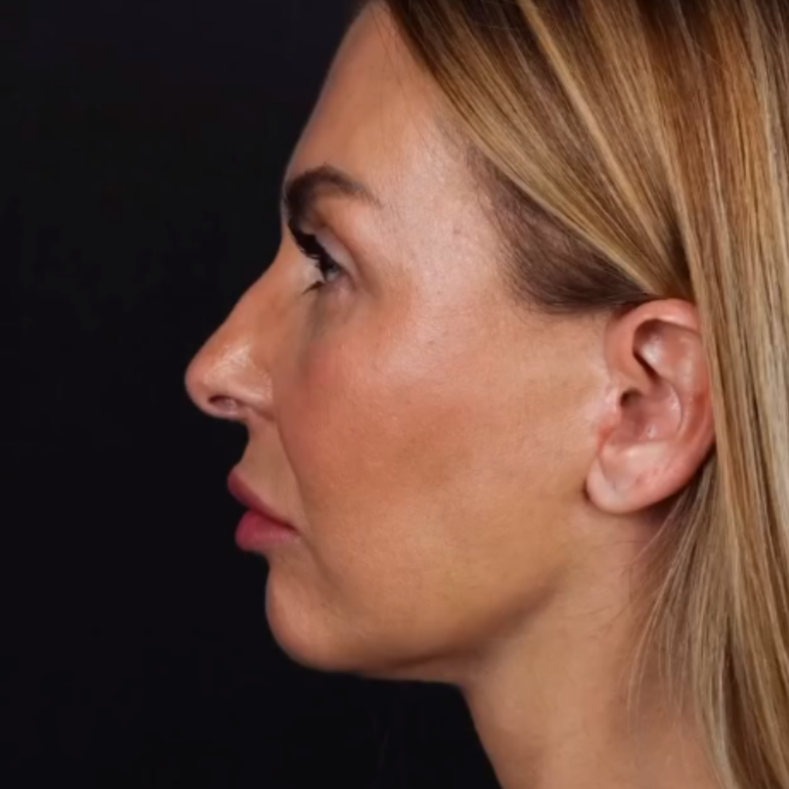
Ми з хлопцем щойно переїхали жити разом, що означало знайомство моїх котів (5-річного кота та 9-річної самки) та його кота (1-річного кота). Спочатку, через кілька днів, вони, здавалося, добре ладнали. Наші два коти мають дуже схожі характери, вони грайливі та стали найкращими друзями. Моя самка завжди була більш стриманою; вона добре ладнає з іншими тваринами, але справді любить свій власний простір. Ми поїхали на тиждень у подорож, і я залишила свою самку у ветеринарній клініці, де працюю, оскільки у неї захворювання серця, яке потребує ліків, а я довіряю своїм колегам, оскільки ми — лікарня швидкої допомоги. Після нашого повернення все, здавалося, повернулося до норми. Я почала помічати, що кішка мого хлопця агресивно ганяється за моєю самкою і не дає їй спокою. Вона почала надмірно ховатися і більше не хотіла бути з ним в одній кімнаті, навіть їсти. Вона була налякана. Звичайно, працюючи у ветеринарній сфері, я чула про pettiko (який ми також використовуємо в лікарні). Я не очікувала, що це спрацює так швидко. Минуло 3 дні, і тепер вони знову всі сплять з нами. Моя самка іноді гарчить на інших, але, чесно кажучи, вона іноді буває темпераментною, тому я не хвилююся. Я дуже рекомендую спробувати це, щоб зменшити будь-яку небажану напругу в будинку.
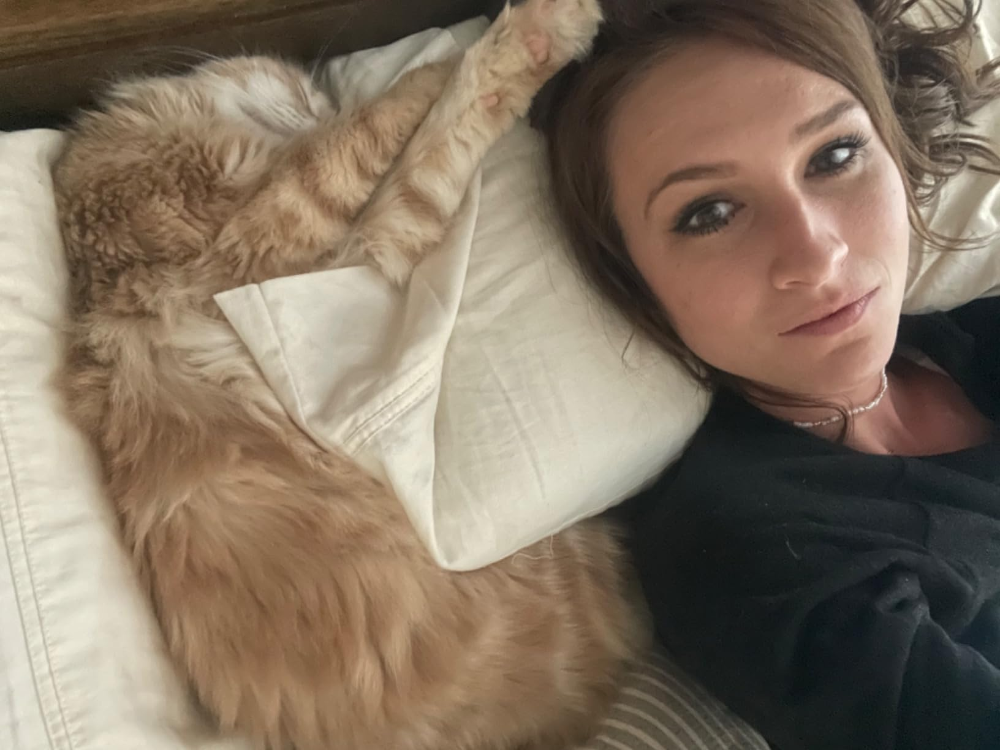
У мене є кіт, якого я взяла собі у дуже важкий період мого життя. Він мало не став котячим терапевтом. Нещодавно він почав мочитися поза своїм лотком без видимої причини. Ми двічі водили його до ветеринара, думаючи, що це може бути інфекція сечовивідних шляхів або діабет. Але щоразу результати були здоровими. Ми перепробували все: звернулися до ветеринара, змінили лоток, змінили його раціон, створили окремий простір від собак (хоча він любить собак і обіймається з ними). Я була дуже зневірена. Останнє, чого я хотіла, це розлучитися зі своїм котом, якого я дуже люблю, але я не могла дозволити йому мітити все навколо. Ветеринар порадив цей дифузор з феромонами, і, чесно кажучи, я думала, що це шахрайство, але я була у відчаї та була готова спробувати все. Мені вдалося придбати його того ж дня. Я підключила його до розетки, і сечовипускання припинилося. Я буквально плакала, бо була така відчайдушна, і це дозволило моєму коту залишитися з нами. Я також хвилювалася, що в моєму будинку буде дивний запах тварин, але він абсолютно без запаху.
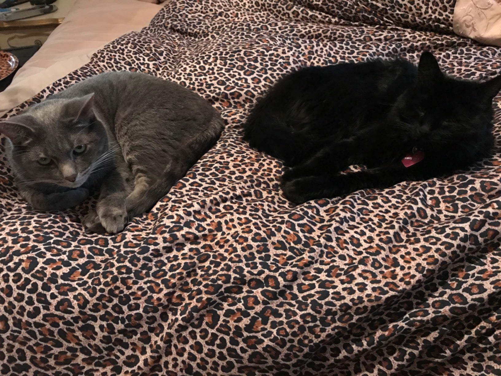
У нас це працює! Щойно я підключила це диво, мій темпераментний кіт Тигре вийшов зі свого кутка, де він ховався та бурчав останні два місяці, і одразу ж пішов до дифузора. Тигре був єдиним котом до п'яти років тому, коли я взяла Коко, коли Тигре було два роки. Хоча я працювала з дому і завжди була з ним, йому явно потрібен був товариш для ігор, оскільки він спав і грався з моєю великою плюшевою твариною. Коли я привела Коко додому п'ять років тому, він одразу ж прив'язався до нього. Відтоді вони жили щасливо та ласкаво, поки кілька місяців тому до нашого двору не почав забирати бездомний кіт. Потім почалося шипіння. Тигре просто зашипів на Коко та відступив у свій куток, щоб забратися від неї та мене. Ми з Коко потребували його. Я не мала уявлення, чому він шипить, але мені було дуже боляче бачити, як він відмовляє Коко в обіймах, яких вона потребувала від нього. Отже, після кількох сотень євро, добрий ветеринар пояснив нам, що все це через дурного бездомного кота, який забрів до нашого двору, куди мої коти ніколи не ходять, і порадив нам придбати цей дифузор. Щойно я підключив його, Тигре одразу вийшов зі свого сварливого куточка і попрямував прямо до дифузора. Пізніше тієї ж першої ночі він вперше за кілька тижнів приєднався до мене та Коко в ліжку, а потім повільно підійшов до неї, весь ласкавий, ніби вибачаючись за свою сварливість.
Якщо з будь-якої причини ви не помітите покращення в поведінці вашого кота або якщо дифузор Petwellness не відповідає вашим очікуванням, ми тут, щоб це виправити. Просто зв’яжіться з нашою службою підтримки клієнтів за адресою support@petwellness.com, і ми швидко повернемо вам 100% коштів без зайвих питань.